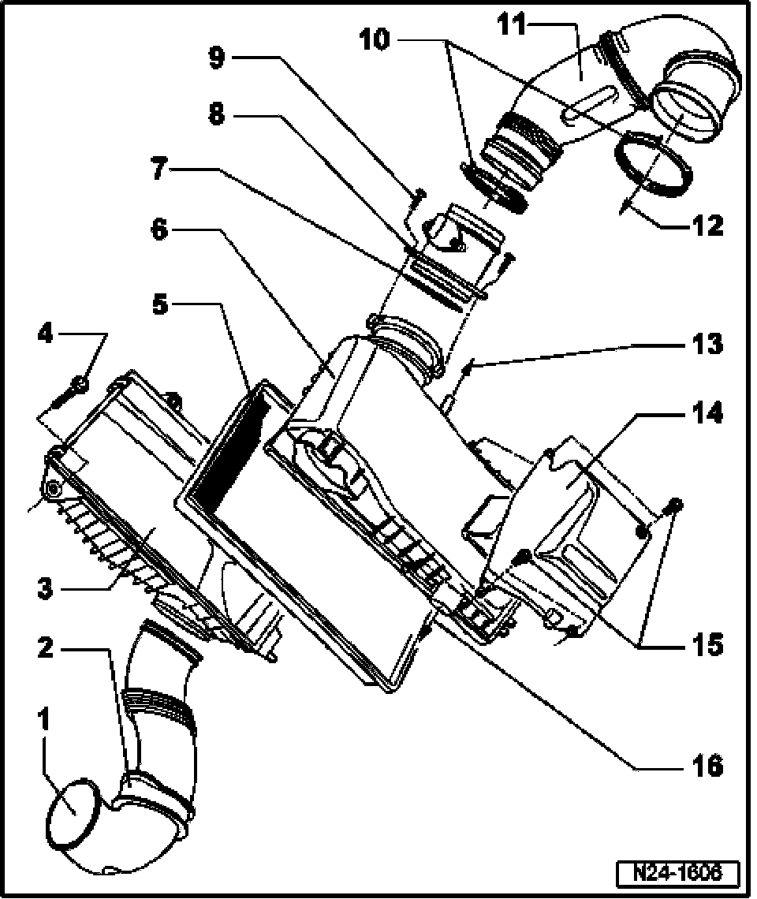

Air Temperature Sensor ( Ambient / Intake ): Service and Repair
Air Filter, Disassembling And Assembling
Air Cleaner:

1 Air guide
- Secured to lock carrier
2 Protective grommet
3 Lower section of air filter
4 6 Nm
5 Filter element
6 Upper section of air filter
7 Seal
- Replace if damaged
8 Mass Air Flow (MAF) sensor -G70-* with Intake Air Temperature (IAT) sensor (G42)*
- 5-pin connector
- Terminals of sensor and connector are gold-plated
- Check Mass Air Flow (MAF) sensor
- Check Intake Air Temperature (IAT) sensor
9 6 Nm
10 Spring clip
- Check for secure seating
11 Intake hose
12 To throttle valve control module
- item 13
13 Vacuum connection
- To air supply unit for level control system and sealing plugs
- For some equipment versions, the connection is sealed with a sealing plug
14 Heat shield
- For upper section of air filter
15 6 Nm
16 Connecting piece
- To intake hose for Secondary Air Injection (AIR) Pump Motor -V101-, item 21.